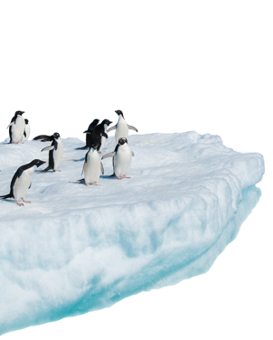
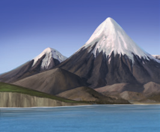

Las capas fluidas de la Tierra se originaron poco tiempo después de que se formara la geosfera, como consecuencia de su desgasificación y de la evaporación del agua helada contenida en cometas y asteroides que cayeron sobre la superficie terrestre.
| Tierra primigenia | Actualidad |
|---|---|
La Tierra estaba rodeada por una envoltura gaseosa que contenía:
|
La Tierra tiene dos capas fluidas:
|
La atmósfera es la envoltura gaseosa que rodea y protege la Tierra. Se extiende hasta los 10 000 km de altura, aunque el 95 % de su masa se acumula en los primeros 15 km, donde constituye una mezcla de gases conocidos como aire.
El aire está compuesto por un 78 % de nitrógeno, un 21 % de oxígeno y un 1 % de otros gases minoritarios, como el argón, el dióxido de carbono y el ozono. Además, el aire contiene una cantidad variable de vapor de agua.
La presión atmosférica es el peso que la masa de aire ejerce sobre la superficie de la Tierra. Se mide en atmósferas, en el sistema internacional, su unidad es el pascal.
1 atmósfera = 105 pascales
El valor de la presión atmosférica disminuye conforme aumenta la altitud geográfica o a medida que se eleva la temperatura del aire próximo a la superficie terrestre.
 